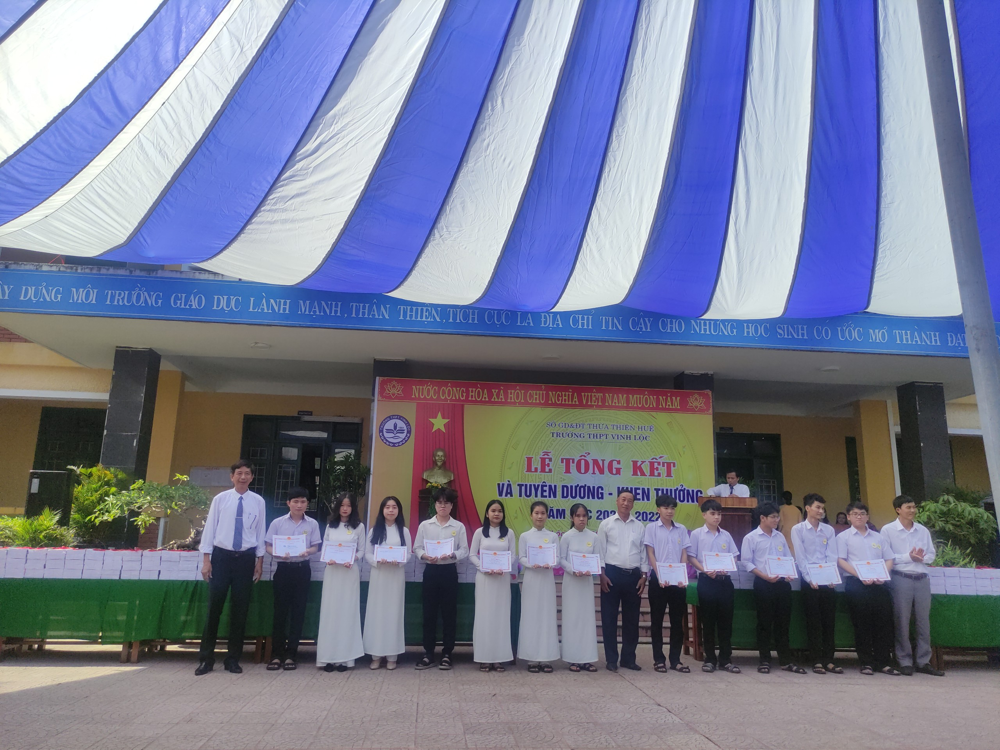
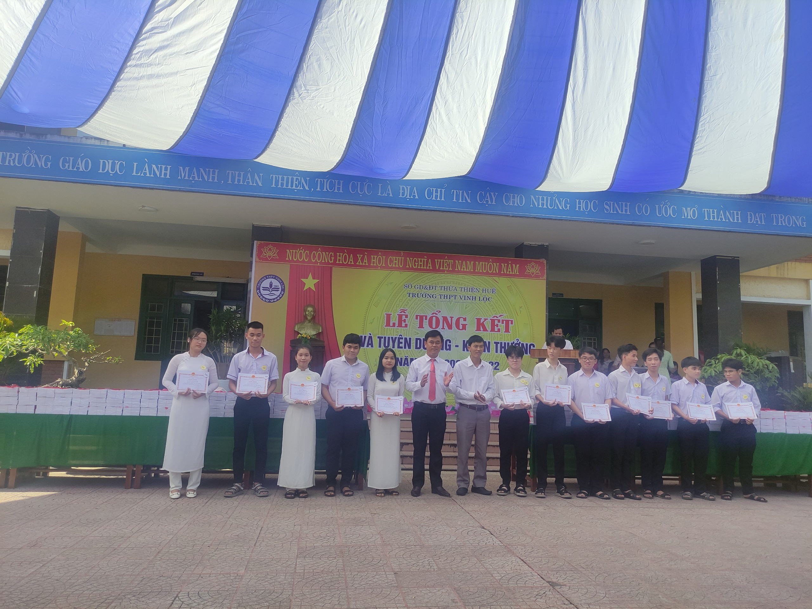
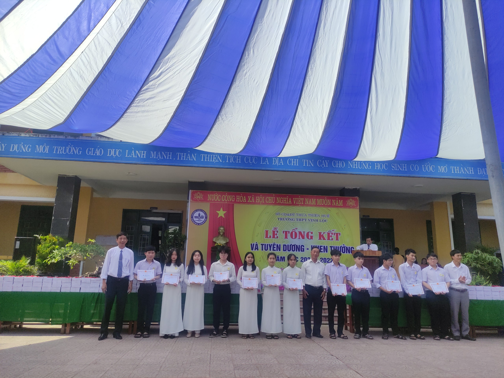
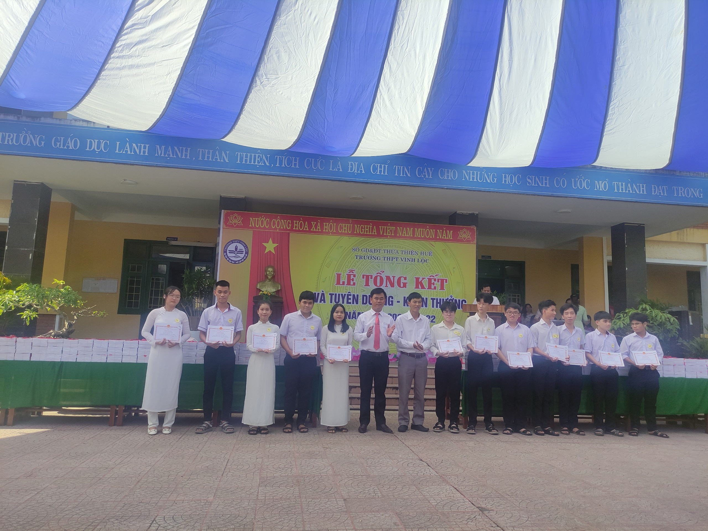
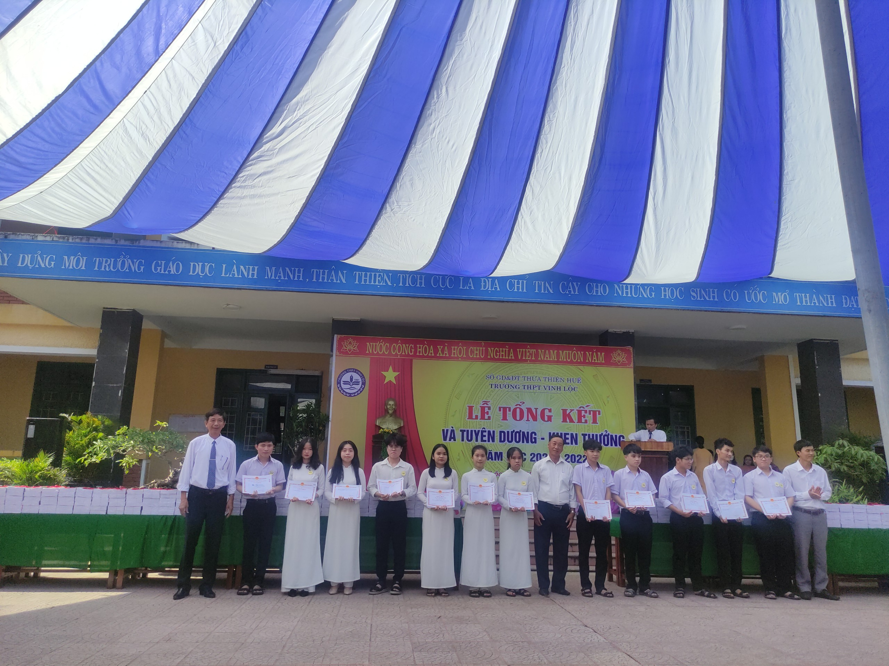
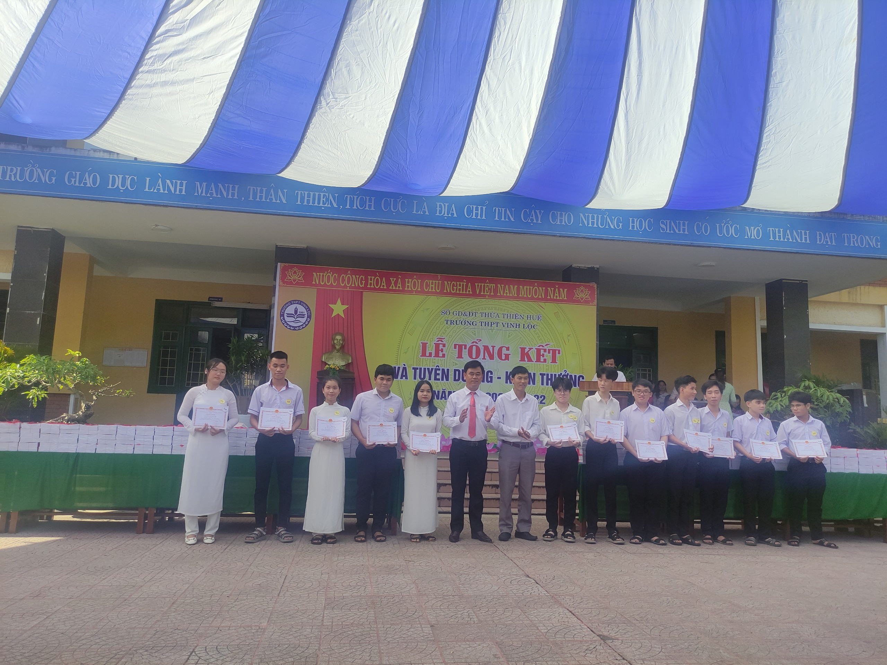

Nhằm đánh giá chất lượng dạy và học cũng như việc thực hiện nhiệm vụ năm học đã đề ra, đồng thời tuyên dương-khen thưởng học sinh đạt thành tích cao trong học tập, sáng ngày 28/5/2022, Trường THPT Vinh Lộc đã long trọng tổ chức Lễ tổng kết năm học 2021-2022.
Đến tham dự Lễ tổng kết và Tuyên dương – Khen thưởng, có sự hiện diện của đại diện các cấp lãnh đạo chính quyền các xã trên địa bàn, đại diện Hội cựu học sinh Vinh Lộc qua các thời kì, đại diện họ tộc có con em học tại trường, đại diện các Quỹ học bổng; có sự tham dự của Ban Đại diện Hội Cha mẹ học sinh trường THPT Vinh Lộc. Về phía nhà trường, có sự tham dự đầy đủ của các thầy cô trong Đảng ủy, Ban Giám hiệu và tập thể CB, GV, NV cùng toàn thể các em học sinh trường THPT Vinh Lộc.
Thay mặt lãnh đạo nhà trường, thầy giáo Nguyễn Văn Tuấn-Hiệu trưởng đã tổng kết, đánh giá hoạt động dạy-học của Trường THPT Vinh Lộc trong năm học qua. Năm học 2021-2022, mặc dù gặp nhiều khó khăn do tình hình dịch bệnh, nhưng bằng sự nỗ lực và quyết tâm của thầy và trò, nhà trường đã đạt được những thành quả đáng tự hào. Nhà trường đã thực hiện tốt đổi mới phương pháp dạy học, tăng cường trang thiết bị dạy học, tạo được cảnh quan môi trường xanh-sạch-sáng, làm tốt công tác xã hội hóa giáo dục. Nhờ sự nỗ lực không ngừng của thầy và trò, chất lượng dạy học trong năm học qua duy trì và phát triển bền vững, ổn định. Chất lượng đại trà đạt chỉ tiêu đề ra. Chất lượng mũi nhọn không ngừng phát triển và đạt thành tích trên nhiều phương diện: Trong Kì thi chọn học sinh giỏi cấp tỉnh năm học 2021-2022 trường đạt 55 giải, xếp vị thứ 6 toàn tỉnh (trong khối THPT); Tham dự Hội thi Khoa học kĩ thuật cấp tỉnh dành cho học sinh trung học đạt 01 giải Nhì; trong Hội thi Sáng tạo Thanh thiếu niên nhi đồng, trường có 01 giải Ba cấp huyện, 01 giải Nhất cấp tỉnh; tham dự Hội thao Giáo dục Quốc phòng-An ninh cấp tỉnh đạt 03 giải Ba; đạt 02 giải khuyến khích trong Hội thi hùng biện tiếng Anh cấp tỉnh; tham dự Giải Điền kinh, giải bơi cấp tỉnh đạt 02 huy chương vàng, 02 huy chương bạc, 02 huy chương đồng; đạt Huy chương đồng toàn quốc trong Cuộc thi Olympic tiếng Anh qua mạng (IOE); đạt giải Ba cấp tỉnh trong Cuộc thi Viết thư Quốc tế UPU…
Thay mặt nhà trường, thầy Nguyễn Văn Tuấn gửi lời cảm ơn đến các cấp lãnh đạo, các Hội Cựu học sinh Vinh Lộc, các tổ chức, cá nhân, Hội Cha mẹ học sinh đã quan tâm, đồng hành cùng nhà trường trong năm học qua. Thầy gửi gắm đến các em học sinh toàn trường nói chung và học sinh khối 12 nói riêng tiếp tục phát huy truyền thống hiếu học của Trường THPT Vinh Lộc, cố gắng hơn nữa để đạt kết quả tốt nhất trong kì thi Tốt nghiệp THPT 2022. Đại diện học sinh khối 12 niên khóa 2019-2022, em Trương Mai Thục Nhi đã gửi lời tri ân sâu sắc đến thầy cô, Hội Cha mẹ học sinh và các cấp chính quyền, đồng thời thể hiện quyết tâm đạt kết quả cao trong kì thi sắp tới.
Buổi Lễ kết thúc trong niềm vui và tự hào về một niên học với nhiều thắng lợi của thầy trò trường THPT Vinh Lộc. Những cánh phượng hồng rực rỡ như lưu luyến chia tay một lứa học trò nữa trưởng thành từ mái trường Vinh Lộc thân yêu.
Một số hình ảnh:

